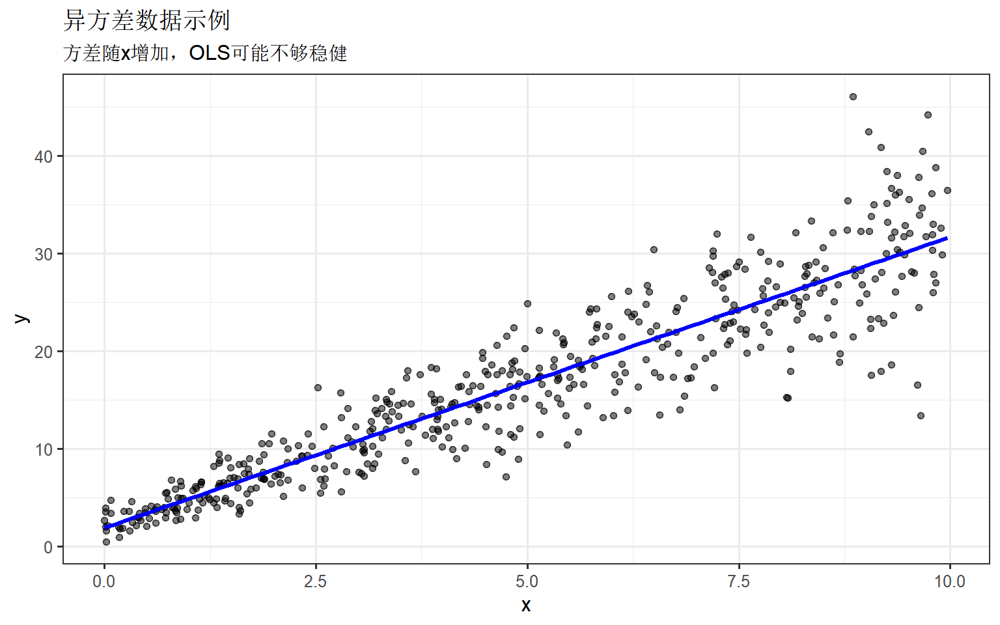
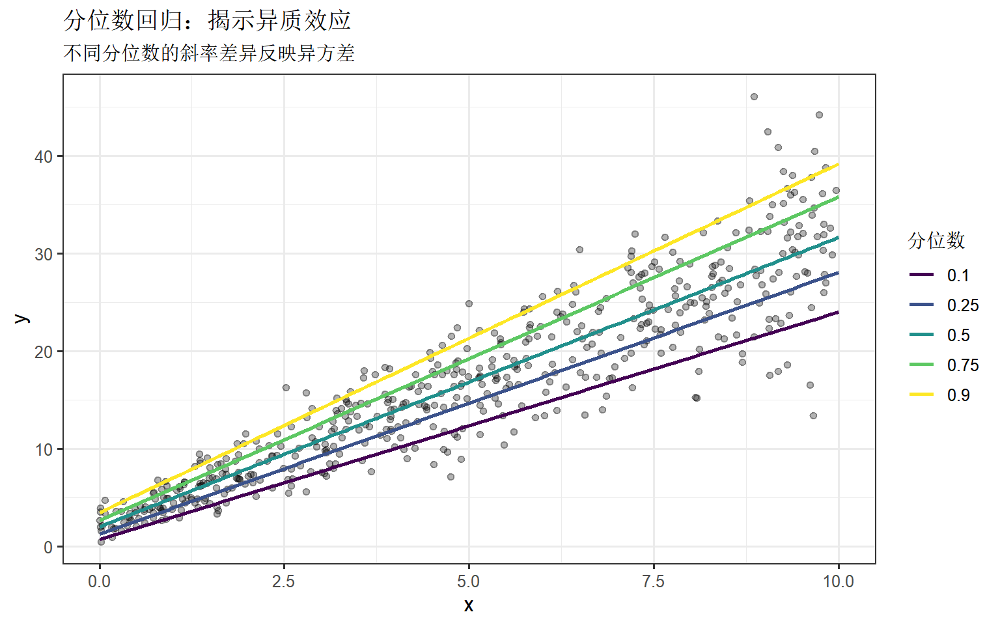
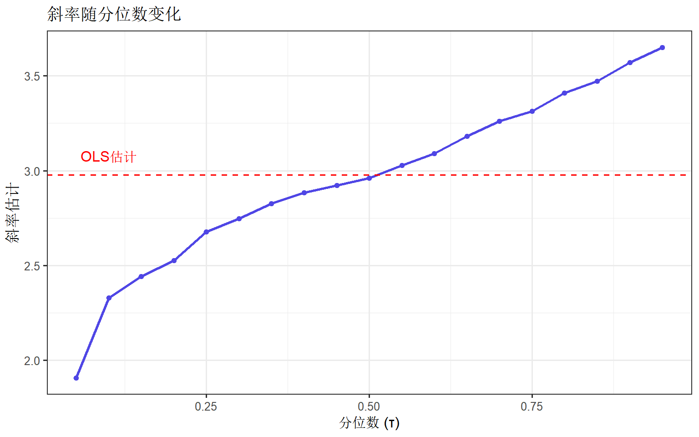
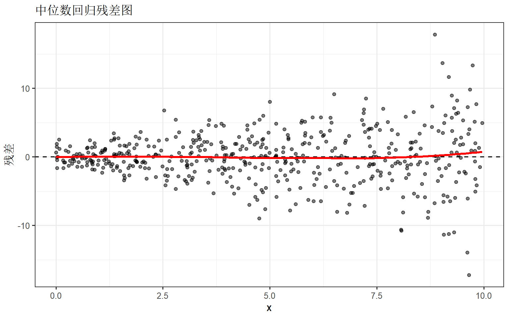
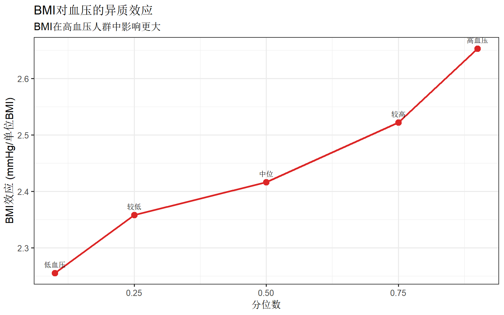

library(quantreg)
library(ggplot2)
library(dplyr)
set.seed(42)
theme_set(theme_bw(base_size = 12))分位数回归完全指南
统计分析方法
基础回归
回归分析
分位数回归
分位数回归分析变量关系在不同分位点的异质性，适用于非正态、异方差数据，是OLS回归的重要补充。
分位数回归简介
分位数回归（Quantile Regression） 是普通最小二乘法（OLS）的重要扩展。OLS估计条件均值，而分位数回归可以估计任意条件分位数，揭示自变量对因变量分布不同位置的影响差异。
为什么使用分位数回归？
| 场景 | OLS问题 | 分位数回归优势 |
|---|---|---|
| 异方差 | 估计不稳健 | 稳健估计 |
| 偏态分布 | 均值不代表典型 | 可估计中位数 |
| 异质效应 | 只看平均效应 | 揭示分布差异 |
| 极端值关注 | 信息丢失 | 可估计极端分位数 |
应用场景
- 收入不平等研究（不同收入水平的影响）
- 医学研究（极端BMI的风险因素）
- 教育研究（高分/低分学生的影响因素差异）
安装与加载
第一部分：基本概念
条件分位数
# 模拟异方差数据
n <- 500
x <- runif(n, 0, 10)
y <- 2 + 3 * x + rnorm(n, 0, 1 + 0.5 * x) # 方差随x增加
data <- data.frame(x, y)
# 可视化
ggplot(data, aes(x = x, y = y)) +
geom_point(alpha = 0.5) +
geom_smooth(method = "lm", color = "blue", se = FALSE) +
labs(
title = "异方差数据示例",
subtitle = "方差随x增加，OLS可能不够稳健"
)
OLS vs 分位数回归
# OLS回归
ols_fit <- lm(y ~ x, data = data)
# 分位数回归（中位数）
qr_50 <- rq(y ~ x, data = data, tau = 0.5)
# 比较系数
cat("OLS 系数:\n")OLS 系数:print(coef(ols_fit))(Intercept) x
1.917869 2.977524 cat("\n中位数回归系数:\n")
中位数回归系数:print(coef(qr_50))(Intercept) x
2.036555 2.959343 第二部分：quantreg 包使用
单分位点回归
# 第25、50、75分位数回归
qr_25 <- rq(y ~ x, data = data, tau = 0.25)
qr_75 <- rq(y ~ x, data = data, tau = 0.75)
# 查看结果
summary(qr_50)
Call: rq(formula = y ~ x, tau = 0.5, data = data)
tau: [1] 0.5
Coefficients:
coefficients lower bd upper bd
(Intercept) 2.03655 1.55747 2.24606
x 2.95934 2.91021 3.06285 多分位点同时估计
# 同时估计多个分位点
taus <- c(0.1, 0.25, 0.5, 0.75, 0.9)
qr_multi <- rq(y ~ x, data = data, tau = taus)
# 提取系数
coef_df <- data.frame(
tau = taus,
intercept = coef(qr_multi)[1, ],
slope = coef(qr_multi)[2, ]
)
print(coef_df) tau intercept slope
tau= 0.10 0.10 0.7091794 2.329041
tau= 0.25 0.25 1.2717881 2.677491
tau= 0.50 0.50 2.0365548 2.959343
tau= 0.75 0.75 2.6594357 3.314266
tau= 0.90 0.90 3.4688429 3.570605可视化多分位数回归线
# 准备预测数据
pred_data <- expand.grid(
x = seq(0, 10, length.out = 100),
tau = taus
)
# 预测
pred_data$y <- NA
for (t in taus) {
fit <- rq(y ~ x, data = data, tau = t)
pred_data$y[pred_data$tau == t] <- predict(fit,
newdata = data.frame(x = pred_data$x[pred_data$tau == t])
)
}
ggplot() +
geom_point(data = data, aes(x = x, y = y), alpha = 0.3) +
geom_line(
data = pred_data, aes(x = x, y = y, color = factor(tau)),
linewidth = 1
) +
scale_color_viridis_d(name = "分位数") +
labs(
title = "分位数回归：揭示异质效应",
subtitle = "不同分位数的斜率差异反映异方差"
) +
theme(legend.position = "right")
第三部分：统计推断
置信区间
# 使用summary获取置信区间
summary_qr <- summary(qr_50, se = "boot", R = 500)
print(summary_qr)
Call: rq(formula = y ~ x, tau = 0.5, data = data)
tau: [1] 0.5
Coefficients:
Value Std. Error t value Pr(>|t|)
(Intercept) 2.03655 0.20938 9.72664 0.00000
x 2.95934 0.05284 56.00639 0.00000系数随分位数变化
# 绘制系数变化图
taus_fine <- seq(0.05, 0.95, by = 0.05)
qr_fine <- rq(y ~ x, data = data, tau = taus_fine)
# 提取斜率和置信区间
slopes <- data.frame(
tau = taus_fine,
estimate = coef(qr_fine)[2, ]
)
# 添加OLS参考线
ols_slope <- coef(ols_fit)[2]
ggplot(slopes, aes(x = tau, y = estimate)) +
geom_line(color = "#4f46e5", linewidth = 1) +
geom_point(color = "#4f46e5") +
geom_hline(yintercept = ols_slope, linetype = "dashed", color = "red") +
annotate("text",
x = 0.1, y = ols_slope + 0.1,
label = "OLS估计", color = "red"
) +
labs(
title = "斜率随分位数变化",
x = "分位数 (τ)", y = "斜率估计"
)
第四部分：模型诊断
拟合优度
# 伪R方 (Koenker-Machado)
rho <- function(u, tau) u * (tau - (u < 0))
pseudo_r2 <- function(model) {
tau <- model$tau
y <- model$y
fitted <- fitted(model)
resid <- y - fitted
# 空模型残差
null_resid <- y - quantile(y, tau)
1 - sum(rho(resid, tau)) / sum(rho(null_resid, tau))
}
cat("中位数回归 Pseudo R²:", round(pseudo_r2(qr_50), 4), "\n")中位数回归 Pseudo R²: 0.6577 残差检查
# 残差图
data$resid_50 <- residuals(qr_50)
ggplot(data, aes(x = x, y = resid_50)) +
geom_point(alpha = 0.5) +
geom_hline(yintercept = 0, linetype = "dashed") +
geom_smooth(method = "loess", color = "red", se = FALSE) +
labs(title = "中位数回归残差图", x = "x", y = "残差")
第五部分：实战案例
医学研究：BMI与血压
# 模拟医学数据
n <- 800
age <- round(runif(n, 30, 70))
bmi <- rnorm(n, 25, 5)
bmi <- pmax(pmin(bmi, 45), 15) # 限制范围
# 血压：BMI效应在高血压人群更强
bp_base <- 90 + 0.3 * age + rnorm(n, 0, 8)
bp_effect <- 0.5 + 0.02 * bp_base # 效应与基线相关
systolic_bp <- bp_base + bp_effect * bmi + rnorm(n, 0, 5)
med_data <- data.frame(age, bmi, systolic_bp)
# 分位数回归
bp_taus <- c(0.1, 0.25, 0.5, 0.75, 0.9)
bp_qr <- rq(systolic_bp ~ age + bmi, data = med_data, tau = bp_taus)
# 查看BMI效应
bmi_effects <- data.frame(
tau = bp_taus,
effect = coef(bp_qr)["bmi", ],
label = c("低血压", "较低", "中位", "较高", "高血压")
)
ggplot(bmi_effects, aes(x = tau, y = effect)) +
geom_line(color = "#dc2626", linewidth = 1) +
geom_point(color = "#dc2626", size = 3) +
geom_text(aes(label = label), vjust = -1, size = 3) +
labs(
title = "BMI对血压的异质效应",
subtitle = "BMI在高血压人群中影响更大",
x = "分位数", y = "BMI效应 (mmHg/单位BMI)"
)
第六部分：与其他方法比较
# OLS vs 中位数回归 vs 稳健回归
library(MASS)
# 添加离群值
outlier_data <- data
outlier_data$y[1:10] <- outlier_data$y[1:10] + 50
# 三种方法
ols_outlier <- lm(y ~ x, data = outlier_data)
qr_outlier <- rq(y ~ x, data = outlier_data, tau = 0.5)
rlm_outlier <- rlm(y ~ x, data = outlier_data)
cat("有离群值时的斜率估计:\n")有离群值时的斜率估计:cat("OLS:", round(coef(ols_outlier)[2], 3), "\n")OLS: 3.149 cat("中位数回归:", round(coef(qr_outlier)[2], 3), "\n")中位数回归: 2.982 cat("稳健回归(rlm):", round(coef(rlm_outlier)[2], 3), "\n")稳健回归(rlm): 3.023 cat("真实值: 3\n")真实值: 3常用代码速查
# ===== 基本拟合 =====
library(quantreg)
# 单分位点
fit <- rq(y ~ x1 + x2, data = df, tau = 0.5)
# 多分位点
fit_multi <- rq(y ~ x1 + x2, data = df, tau = c(0.25, 0.5, 0.75))
# ===== 统计推断 =====
summary(fit) # 默认
summary(fit, se = "boot", R = 1000) # Bootstrap
# ===== 系数提取 =====
coef(fit)
confint(fit)
# ===== 预测 =====
predict(fit, newdata = new_df)
# ===== 可视化 =====
plot(summary(rq(y ~ x, tau = 1:9 / 10))) # 系数变化图小结
分位数回归的核心价值：
- 异质性分析：揭示效应在分布不同位置的差异
- 稳健估计：对离群值和非正态分布more稳健
- 完整图景：不仅看均值，还看整个条件分布
适用场景：当你怀疑效应可能因人群子组而异，或数据存在异方差/偏态时。
参考资源
- quantreg 官方文档
- Koenker, R. (2005). Quantile Regression. Cambridge University Press.
- Quantile Regression in R